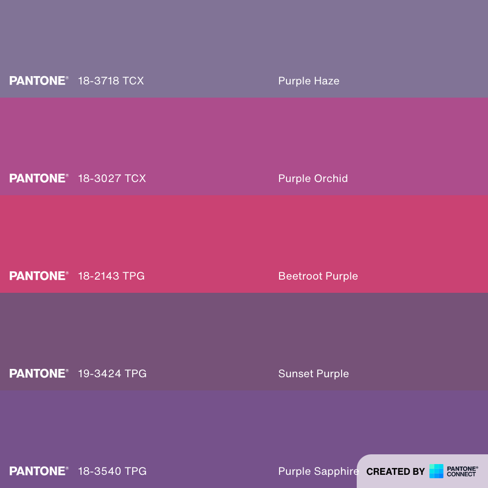
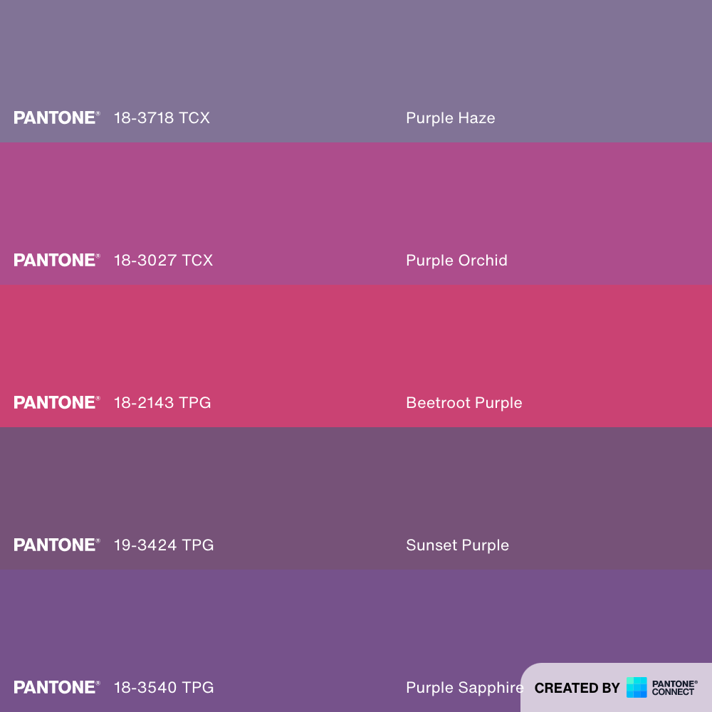

|
|
|
|
|
|
|
|
|
|
|
|
|
|
|
|
Rookery is art recollection software. We built it for the home collector, to help them build a more intimate relationship with their art.
As developers, our goal is to write readable and elegant code. We are on a constant mission to improve our map and roadbook of the repository. As a team member, you are asked to adhere to American Cyborg's philosophic and aesthetic standards to the best of your ability.
Rookery is our flagship product: software designed to improve the complex, laborious process of archiving an art collection, and maintaining it over time. It is named for bird rookeries, which are collections of nests, where the burdens and joys of treasuring precious objects is shared by the group.
There are many excellent, elegant, feature-rich software solutions out there for galleries and professional artists. Our software is designed for everyday collectors, who don’t need a museum-level inventory with a price-tag to match. Rookery is designed to provide a beautiful, experiential virtual environment, where you can really dive in and enjoy your collection.
We partnered with NYC firm AREA 17 to develop Rookery’s MVP through 2020, and continue to optimize and expand our codebase in modest increments, as to ensure the best possible security, reliability, and functionality at each step.
 |
SigilTransistor - Binary switch upon which computer code is written Cloud - For online data storage Wings - For cloud access |
FancystyleStarry Crown - Divine knowledge from above Penguins - For protecting and nesting Egg - For precious goods |
 |
 
| 2015 | |||
|---|---|---|---|
| Q1 | January 2RO001 - Foundation |
February 2RO002 - Add Bluebird |
March 2RO003 - Add Albatross |
| Q2 | April 2RO004 - |
May 2RO005 - |
June 2RO006 - |
| Q3 | July 2RO007 - |
August 2RO008 - |
September 2RO009 - Add Finch |
| Q4 | October 2RO010 - |
November 2RO011 - |
December 2RO012 - |
| 2016 | |||
|---|---|---|---|
| Q1 | January 2RO013 - |
February 2RO014 - |
March 2RO015 - |
| Q2 | April 2RO016 - |
May 2RO017 - |
June 2RO018 - |
| Q3 | July 2RO019 - |
August 2RO020 - |
September 2RO021 - |
| Q4 | October 2RO022 - |
November 2RO023 - |
December 2RO024 - |
| 2017 | |||
|---|---|---|---|
| Q1 | January 2RO025 - |
February 2RO026 - |
March 2RO027 - |
| Q2 | April 2RO028 - |
May 2RO029 - |
June 2RO030 - |
| Q3 | July 2RO031 - |
August 2RO032 - |
September 2RO033 - |
| Q4 | October 2RO034 - |
November 2RO035 - |
December 2RO036 - |
| 2018 | |||
|---|---|---|---|
| Q1 | January 2RO037 - |
February 2RO038 - |
March 2RO039 - |
| Q2 | April 2RO040 - |
May 2RO041 - |
June 2RO042 - |
| Q3 | July 2RO043 - |
August 2RO044 - |
September 2RO045 - |
| Q4 | October 2RO046 - |
November 2RO047 - |
December 2RO048 - |
| 2019 | |||
|---|---|---|---|
| Q1 | January 2RO049 - |
February 2RO050 - |
March 2RO051 - |
| Q2 | April 2RO052 - |
May 2RO053 - |
June 2RO054 - |
| Q3 | July 2RO055 - |
August 2RO056 - |
September 2RO057 - |
| Q4 | October 2RO058 - |
November 2RO059 - |
December 2RO060 - |
| 2020 | |||
|---|---|---|---|
| Q1 | January 2RO061 - |
February 2RO062 - |
March 2RO063 - |
| Q2 | April 2RO064 - |
May 2RO065 - |
June 2RO066 - |
| Q3 | July 2RO067 - |
August 2RO068 - |
September 2RO069 - |
| Q4 | October 2RO070 - |
November 2RO071 - |
December 2RO072 - |
| 2021 | |||
|---|---|---|---|
| Q1 | January 2RO073 - |
February 2RO074 - |
March 2RO075 - |
| Q2 | April 2RO076 - |
May 2RO077 - |
June 2RO078 - |
| Q3 | July 2RO079 - |
August 2RO080 - |
September 2RO081 - |
| Q4 | October 2RO082 - |
November 2RO083 - |
December 2RO084 - |
| 2022 | |||
|---|---|---|---|
| Q1 | January 2RO085 - |
February 2RO086 - |
March 2RO087 - |
| Q2 | April |
May |
June |
| Q3 | July |
August |
September |
| Q4 | October |
November |
December |